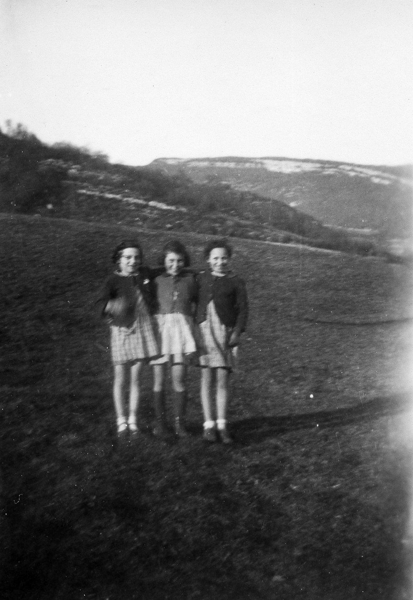

Portrait d’archive
Enfants Mermelstein
Marcel MERMELSTEIN
Marcel MERMELSTEIN est né le 14/01/1937 à Anvers en Belgique.
Rassemblé à Lyon, il est déporté à Auschwitz le 20/05/1944 par le convoi n°74. Il est mort en déportation.
Dernière adresse connue : (Izieu)
Nom : MERMELSTEIN
Prénom(s) : Marcel
Date naissance : 14/01/1937
Âge (ans) : 7
Lieu naissance : Anvers
Pays ou département : Belgique
Lieu rassemblement : Lyon
Dernière adresse : ?
Ville : Izieu (Ain)
Code postal : 01300
N° Convoi : 74
Date déportation : 20/05/1944
Informations diverses : Mermelstein (Marcel) né le 14 janvier 1937 à Anvers (Belgique) décédé le 25 mai 1944 à Auschwitz (Pologne) ENFANTS ARRÊTÉS À LA COLONIE D´IZIEU LE 6 AVRIL 1944 PUIS DÉPORTÉS et non le 18 avril 1944 à Auschwitz (Pologne).
Lieu de déportation : Auschwitz
Lieu de départ : Drancy
Nombre total de déporté·e·s du convoi : 1200
Gazé·e·s à l'arrivée : 904 (75,3 %)
Survivant·e·s en 1945 : 166 (13,8 %)
Paulette MERMELSTEIN
Paulette MERMELSTEIN est née le 10/01/1934 à Anvers en Belgique.
Rassemblée à Lyon, elle est déportée à Auschwitz le 20/05/1944 par le convoi n°74. Elle est morte en déportation.
Dernière adresse connue : (Izieu)
Nom : MERMELSTEIN
Prénom(s) : Paulette
Date naissance : 10/01/1934
Âge (ans) : 10
Lieu naissance : Anvers
Pays ou département : Belgique
Lieu rassemblement : Lyon
Dernière adresse : ?
Ville : Izieu (Ain)
Code postal : 01300
N° Convoi : 74
Date déportation : 20/05/1944
Informations diverses : ?
Lieu de déportation : Auschwitz
Lieu de départ : Drancy
Nombre total de déporté·e·s du convoi : 1200
Gazé·e·s à l'arrivée : 904 (75,3 %)
Survivant·e·s en 1945 : 166 (13,8 %)